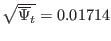
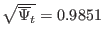
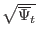
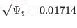
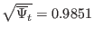
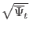
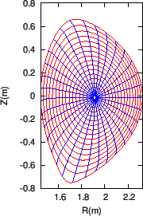
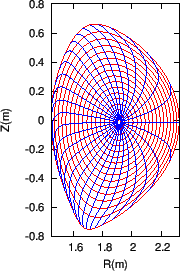

Figure 7 compares the equal-arc-poloidal angle with the
straight-line poloidal angle, which shows that the resolution of the
straight-line poloidal angle is not good near the low-field-side midplane.
Figure 7:
The equal-arc poloidal angle (left) and the
straight-line poloidal angle (right) for EAST equilibrium #38300@3.9s. The
blue lines correspond to the equal- lines, with uniform
interval between neighbour lines. The red lines correspond to the magnetic
surfaces, which start from
 (the
innermost magnetic surface) and end at

(the boundary magnetic surface), and are spaced in equal increments of
.
lines, with uniform
interval between neighbour lines. The red lines correspond to the magnetic
surfaces, which start from
 (the
innermost magnetic surface) and end at

(the boundary magnetic surface), and are spaced in equal increments of
.
|  |
yj
2018-03-09